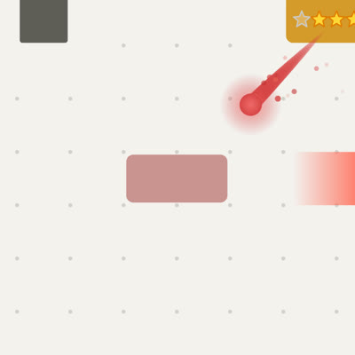

Soul styles
The red block's soul flying from a reached goal to the next red block, filmed in the game (test/experiments/soul-look.mjs): a goal reached on a small board, its finish skipped with a tap, then frame by frame. Each style is in the game behind ?soul=<name>; the game still uses the classic soul. The red band at the right edge points to the new goal's target, off screen.
Round three
- Comet, Flame and Glint, all three drawing in, flying and hitting the same way. The plan: the game picks one of them at random for each soul.
- The hit: the flash is now the block's own colour going pale, so it moves (and throbs) with the block; no drops splash out any more, just the knock and the ring.
- No gold sparks but Flame's embers; sparks have no edge. Comet's sparks in four kinds below.
- Fixed: the new red block's guide trail showed while the finish played; it now waits for the soul to land.
Comet ?soul=comet
A shaded red ball in a soft red glow, a long red streak, red sparks (three reds, no edge) scattering off it and falling.


Flame ?soul=flame
A fireball (yellow middle, orange, red edge) whose glow flickers; three tongues of fire behind it, red round orange round yellow, each licking sideways on its own, wider towards the tail; embers in orange, yellow and red rising off it. Its ring is orange.


Glint ?soul=glint
A red four-pointed glint with a white one inside it and a white core, a thin pale glint turning across it, and its arms flashing out twice on the way; small red-and-white glints twinkle along the streak behind it.


Comet's sparks
The same moment of each (800 ms after setting off).

?soul=cometSmall solid dots in three reds, no edge.
?soul=comet-softSoft blurred red blobs, bigger, fading.
?soul=comet-dustMany fine dark-red specks.
?soul=comet-plainJust the streak.